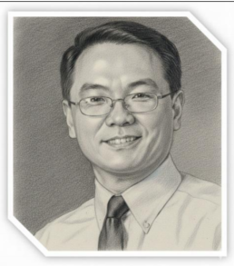
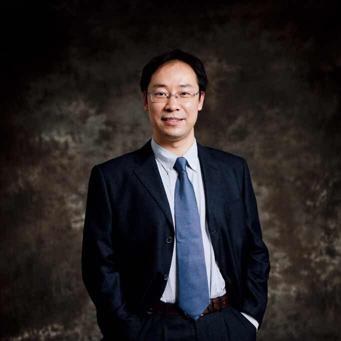
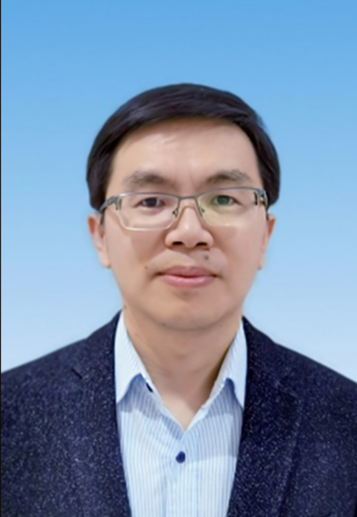

Workshop Details
Time: 3:00-5:30 PM, 25 May, 2026
Location: Conference Room: 5J, SHICC, Level 5

Don Tan
Data Center Challenges: Powering “the AI Factories”
Dr. Don Tan
Vice President of IEEE Technical Activities; Chair of the IEEE Technical Activities Board; member of the National Academy of Engineering; IEEE Fellow
Recent studies predict the power level per rack in data centers is going from 100kW to 1MW (Microsoft, Google, and Meta). The overall electricity demand for “AI factories” is doubling to 1,000 TWh annually by 2030 (EPRI and Delloitte). “The end of AI is energy” sentiment reflects the severity of the “Power Wall” challenge (No conventional solutions). Breaking this seemingly-impossible “Power Wall” requires technical breakthroughs in the entire AI hardware/firmware ecosystems. Solution space includes, but not limited to, Liquid cooling from chip direct to plate, Immersion cooling with oil, Next-gen GPUs, TPUs and ASIC accelerators, HBM4 memories, WLP and specialized optical interconnects, Small modular nuclear reactors, Quantum computing and Fusion. Power connection/generation, distribution, processing and management are critical. Main events for powering computing industry are briefly reviewed, focusing on power, thermal management, and networking. Energy-efficient architecture are then discussed. Flexible electronic Large Power Transformers (FeLPTs) are emerging as a critical technology node. FeLPTs circuit options and challenges in interfacing with power grids are discussed. Structured microgrids, stand-alone or connected, are natural for efficient data center power parks. Desired features for UPS systems, together with its required storage capacity, are then presented. Potential in-rack, off-board, and on-board power processing circuits and system solutions are then explored.
Speaker's BioDr. Tan is a member of the National Academy of Engineering, a fellow of the IEEE and a PhD from Caltech. He has served as Distinguished Engineer, Fellow, Chief Engineer (Power Conversion), Program Manager, Senior Department Manager, and Center Director at a leading US Fortune 500 corporation. Unusually prolific as a visionary and impactful leader in ultra-efficient power conversion and electronic energy systems, Dr. Tan has pioneered breakthrough innovations with numerous high-impact industry firsts and record performances that received commendations from the highest level of the Government. He has developed hundreds of designs and thousands of hardware units deployed in high-impact space systems without a single on-orbit failure. His suite of world-class electronics performed flawlessly on the James Webb Space Telescope (JWST) one million miles away with world-record-breaking on-orbit technical performances, advancing humanity’s understanding of deep space for years to come. Dr. Tan is IEEE Vice President and Technical Activities Board Chair in 2026. He has served as IEEE Transportation Electrification Council Founding President, IEEE Fellow Advisory/Oversight Subcommittee Chair, IEEE Industry Engagement Committee Vice Chair, Division II Director (IEEE Board of Directors), IEEE Fellow Committee Chair, PELS/PES eGrid Steering Committee Chair, PELS Long Range Planning Committee Chair, Nomination Committee Chair, PELS President, IEEE Journal of Emerging and Selected Topics in Power Electronics Founding Editor-in-Chief, APEC General Chair, PELS Vice President-Operations, Guest Editor-in-Chief for IEEE Transactions on Power Electronics and IEEE Transactions on Industry Applications, PELS Fellow Committee, PELS Vice President-Meetings, IEEE/Google Little Box Challenge Co-Chair, and IEEE/DoD Working Group Chair. Don has delivered more than 140 global keynotes and invited presentations. He has received more than $30M customer funding for research and technology. He serves on prestigious national and international awards and review or selection committees.
Hongxia Yang
Co-GenAI: A Novel Fusion-Driven Framework
Prof. Hongxia Yang
Associate Dean of the Faculty of Computing and Mathematical Sciences and Executive Director of the PolyU Academy for AI, Hong Kong Polytechnic University
We introduce a new framework that makes foundation model development more efficient, accessible, and collaborative. At its core is Domain-Adaptive Continual Pretraining (DACP), which combines lightweight efficiency via the first end-to-end FP8 low-bit training suite with collaborative expertise, embedding professional intuition through domain-specific models. DACP continuously adapts Large Language Models with unlabeled domain data, achieving superior specialization in underrepresented fields such as healthcare and science, while reducing GPU costs and outperforming mainstream systems. The framework also features an Advanced Model Fusion module. By integrating top-performing domain models regardless of their pretraining architecture, it constructs powerful foundation models in just 160 GPU hours, compared to the million-plus hours typically needed from scratch. Its Resource-Efficient Architecture further democratizes AI by enabling effective use of distributed, entry-level GPU clusters, lessening reliance on centralized compute. We also establish the first theoretical scaling law of model merging, providing a new principle for distributed generative AI. Real-world applications demonstrate its impact, with medical models surpassing Google MedGemma and multi-agent systems rivaling OpenAI’s Deep Research. This framework reimagines foundation model development faster, cheaper, and more inclusive.
Speaker's BioProf. Hongxia Yang, Associate Dean of the Faculty of Computing and Mathematical Sciences and Executive Director of the PolyU Academy for AI (PAAI), is a Professor at The Hong Kong Polytechnic University. She received her PhD from Duke University, has published over 150 papers in leading conferences and journals, and holds more than 50 patents. She has received numerous prestigious awards, including the highest honor of the 2019 World Artificial Intelligence Conference (WAIC) - the Super AI Leader (SAIL) Award, the Second Prize of the 2020 National Science and Technology Progress Award, the First Prize of the Chinese Institute of Electronics Science and Technology Progress Award in 2021, and both the Forbes China Top 50 Women in Science and Technology and the Ministry of Education Science and Technology Progress Award (First Class) in 2022. Since 2023, she has been recognized as an AI 2000 Most Influential Scholar and was named one of the Top 50 Women in AI worldwide by CoinDesk, as well as a WAIC SAIL Top 30 Projects honoree in 2025. Her professional experience spans leading roles across academia and industry: she served as Head of LLM in the US at ByteDance, AI Scientist and Director at Alibaba Group, Principal Data Scientist at Yahoo! Inc., and Research Staff Member at the IBM T.J. Watson Research Center. She has also held joint adjunct professorships at Zhejiang University and the Shanghai Advanced Research Institute. Notably, she founded the foundation model teams at both Alibaba and ByteDance, establishing herself as a pioneer in the field of Generative AI.

Yungang Bao
Agile Development Practices for Open-source High-performance RISC-V Core - XiangShan
Prof. Yungang Bao
Professor and Deputy Director, Institute of Computing Technology, Chinese Academy of Sciences
In recent years, open RISC-V has led the trend in open-source processor design. XiangShan is an open-source high-performance RISC-V processor core that has become the highest-performing and most active open-source chip project internationally. It has been integrated into mass-production chips by multiple enterprises, achieving the industry's first product-level delivery and large-scale application of an open-source high-performance processor. This talk primarily discusses practical experiences from XiangShan's evolutionary journey, introduces various challenges faced during its agile development process and the corresponding solutions, and will also explore a series of unresolved open issues.
Speaker's BioYungang Bao is a professor of Institute of Computing Technology (ICT), Chinese Academy of Sciences (CAS) and the deputy director of ICT, CAS. Prof. Bao co-founded Beijing Institute of Open Source Chip (BOSC). His research interests include computer architecture and computer systems. He is leading the XiangShan project, One Student One Chip (OSOC) Initiative etc. His work was published on top conferences and journals such as ASPLOS, Communication of the ACM, HPCA, ISCA, MICRO etc. and was selected to IEEE Micro Top Picks. He was the winner of RISC-V International Technical Leadership Award, CCF-Intel Young Faculty Award of the year for 2013 and the winner of CCF-IEEE CS Young Computer Scientist Award and China's National Lofty Honor for Youth under 40 of the year for 2019.
Tao Xie
RISC-V+AI OS: An Initiative of Building Foundations for Open and Trustworthy AI
Prof. Tao Xie
Peking University Chair Professor; Dean of Institute of Systems for Advanced Computing at Fudan University; Chief Scientist of Beijing Institute of Open Source Chip
Tao Xie is a Peking University Chair Professor, Dean of Institute of Systems for Advanced Computing at Fudan University (FiSAC), Chair of the Department of Software Science and Engineering in the School of Computer Science at Peking University, Chairman and Director of Beijing Tongming Lake Information Technology Application Innovation Center (TLAIC), Dean of Shanghai Institute of Systems for Open Computing (iSOC), Secretary General of Shanghai Open Processor Innovation Center (SOPIC), and Chief Scientist of Beijing Institute of Open Source Chip (BOSC). He was a Full Professor at the Department of Computer Science, the University of Illinois at Urbana-Champaign (UIUC), USA. He is a Foreign Member of Academia Europaea, and a Fellow of ACM, IEEE, AAAS, Chinese Institute of Electronics (CIE), and China Computer Federation (CCF). He won all three senior awards of ACM SIGSOFT (Outstanding Research Award, Influential Educator Award, Distinguished Service Award) etc. He serves as Director of CCF Technical Committee of System Software (TCSS). His main research interests include software engineering, system software, software security, trustworthy AI, RISC-V software ecosystem.

Jun Zhou
Ultra-Low-Power AI Processor Design for Intelligent Sensing at Edge
Prof. Jun Zhou
Professor at the University of Electronic Science and Technology of China; ultra-low-power AI processor design for intelligent sensing at edge
Edge AI applications necessitate the integration of AI processors into smart devices that demand ultra-low power consumption and miniaturization. However, current commercial edge AI processors cannot meet the ultra-low-power AI computing needs of next-generation smart devices. Through algorithm-hardware co-optimization, the design of domain-specific edge AI processors can substantially reduce the power consumption of AI computation, while maintaining high accuracy and low cost with certain application flexibility. This talk discusses the design methodologies for ultra-low-power AI processors for edge scenarios, along with representative application cases.
Speaker's BioJun Zhou has been a Professor at the University of Electronic Science and Technology of China (UESTC) since 2017. Before joining UESTC, he worked at IMEC (the Netherlands) and the Institute of Microelectronics Singapore as a research scientist for around 10 years. He is a Council Member of the National Engineering Research Center for Advanced Microprocessor Technology, Director of the Embedded Artificial Intelligence Committee of Sichuan Institute of Electronics, and Deputy Director of Sichuan Engineering Research Center for Intelligent Circuits and Systems of Unmanned Systems. His research interests focus on ultra-low-power AI processor design for intelligent sensing at edge. He has published more than 150 papers in prestigious conferences and journals, including ISSCC and JSSC. He has designed and taped out a series of ultra-low-power AI processors for intelligent sensing applications including visual sensing, acoustic sensing, and smart wearables, achieving the lowest power consumption among the state-of-the-art designs while ensuring accuracy and real-time performance. He serves or has served as a member of the Digital Architectures and Systems (DAS) Subcommittee of ISSCC, Chair of the Digital Circuits and Systems (DCS) Subcommittee of A-SSCC, and Associate or Guest Editor of prestigious journals including JSSC, TBioCAS and TVLSI.